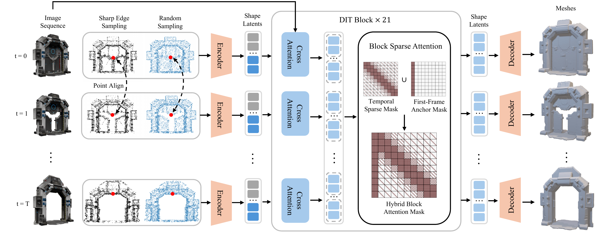
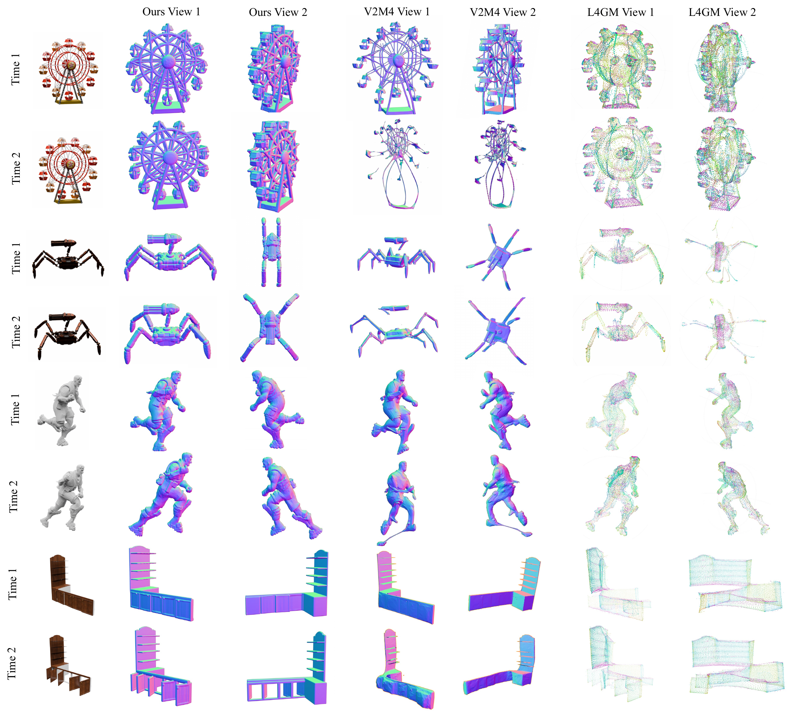
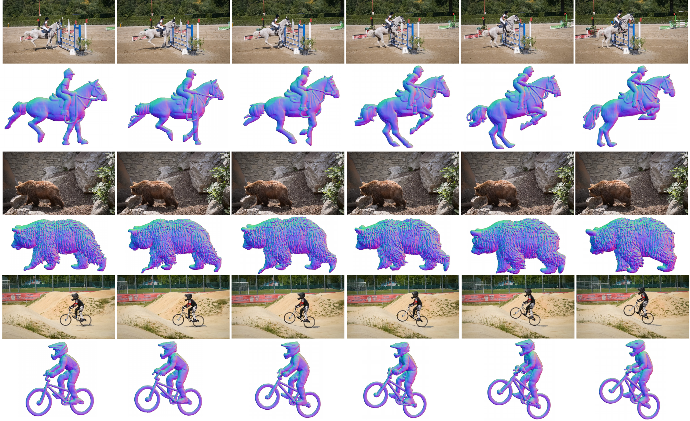
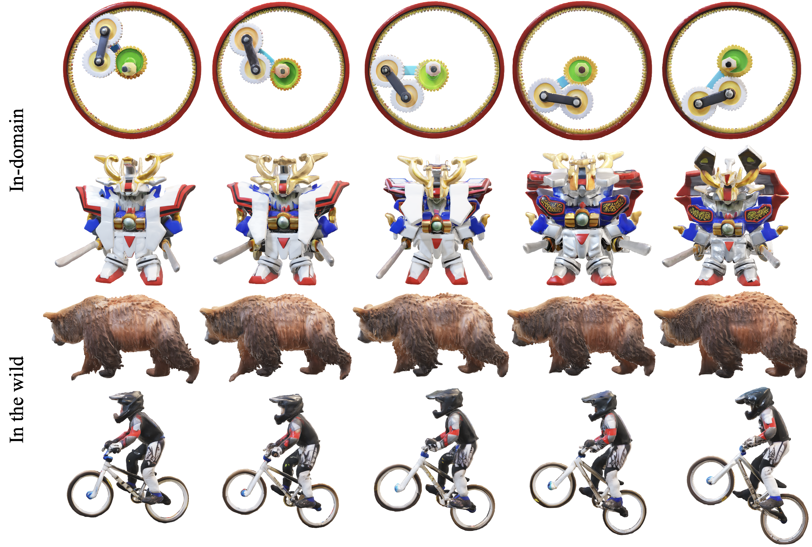

Recent breakthroughs in 3D generative modeling have yielded remarkable progress in static shape synthesis, yet high-fidelity dynamic 4D generation remains elusive, hindered by temporal artifacts and prohibitive computational demand. We present Sculpt4D, a native 4D generative framework that seamlessly integrates efficient temporal modeling into a pretrained 3D Diffusion Transformer (Hunyuan3D 2.1), thereby mitigating the scarcity of 4D training data. At its core lies a Block Sparse Attention mechanism that preserves object identity by anchoring to the initial frame while capturing rich motion dynamics via a time-decaying sparse mask. This design faithfully models complex spatiotemporal dependencies with high fidelity, while sidestepping the quadratic overhead of full attention and reducing network total computation by 56%. Consequently, Sculpt4D establishes a new state-of-the-art in temporally coherent 4D synthesis and charts a path toward efficient and scalable 4D generation.

Overview of our 4D generation framework. Conditioned on an image sequence, we use Consistent Surface Sampling to acquire both sharp edge points and random surface points, which a vector set VAE encodes into shape latents. These latents are processed by 4D DiT blocks, which use cross-attention for image conditioning and our novel Block Sparse Attention. This sparse attention, guided by a composite mask (Temporal Sparse and First-Frame Anchor), efficiently captures motion while ensuring identity consistency. Finally, a decoder produces the final mesh sequence from the denoised latents.
Barycentric propagation from a rest-pose canonical mapping, plus projection onto per-frame watertight meshes, ensures temporally coherent inputs to the VAE.
A single noise vector \(\epsilon_{seq}\) is broadcast across frames, so latent dynamics are driven purely by deterministic \(\mu_t,\sigma_t\) changes — eliminating temporal jitter in the latent space.
A first-frame anchor locks object identity, and a time-decaying diagonal mask preserves spatial correspondence while pruning uncorrelated pairs — cutting 56% of compute.
Use the slider below each example to scrub through time and sync the input video with our generated mesh. Click ▶ Play for automatic playback. Drag the 3D viewer to rotate.
Longer sequences demonstrating our sparse attention's ability to scale to high frame counts without quality degradation.

Qualitative comparison of 4D mesh generation. We compare Sculpt4D against V2M4 and L4GM. Given an input image (left), we show two generated views per method. Top and bottom rows correspond to time frames Time 1 and Time 2, respectively.
| Representation | Chamfer ↓ | IoU ↑ | F-Score ↑ | |
|---|---|---|---|---|
| Hunyuan3D | SDF | 0.1220 | 0.3125 | 0.2820 |
| Hunyuan3D* | SDF | 0.1231 | 0.3176 | 0.2883 |
| L4GM | MV-3D GS | 0.1655 | — | 0.2033 |
| V2M4 | mesh + deform | 0.1268 | 0.3071 | 0.2909 |
| GVFD | 3D GS + deform | 0.4235 | — | 0.0717 |
| Sculpt4D (Ours) | SDF | 0.1052 | 0.3381 | 0.3137 |

Mesh sequences generated from in-the-wild data. Sculpt4D generalizes robustly to diverse unseen dynamics while maintaining high geometric fidelity.

Qualitative results of textured mesh sequences. Using global rigid registration plus local ARAP alignment, textures from the first frame propagate seamlessly across the entire sequence.
| Chamfer ↓ | IoU ↑ | F-Score ↑ | PFLOPs | |
|---|---|---|---|---|
| w/o consistent sampling | 0.1128 | 0.3375 | 0.3380 | 186.3 |
| w/o shared noise | 0.1051 | 0.3396 | 0.3342 | 186.3 |
| w/o sharp-edge sampling | 0.1005 | 0.3408 | 0.3369 | 186.3 |
| w/o attention sink | 0.0986 | 0.3442 | 0.3375 | 169.8 |
| Temporal-only attention | 0.2071 | 0.1972 | 0.1833 | 60.2 |
| Fixed stride | 0.1124 | 0.3298 | 0.3306 | 167.1 |
| Full attention | 0.0958 | 0.3466 | 0.3402 | 425.7 |
| Sculpt4D (Ours) | 0.0972 | 0.3451 | 0.3383 | 186.3 |
Per-layer, our sparse attention uses only 35% of the PFLOPs required by full attention — an advantage that grows with sequence length.
@inproceedings{sculpt4d2026,
title={Sculpt4D: Generating 4D Shapes via Sparse-Attention Diffusion Transformers},
author={Yin, Minghao and Hu, Wenbo and Xu, Jiale and Shan, Ying and Han, Kai},
booktitle={Proceedings of the IEEE/CVF Conference on Computer Vision and Pattern Recognition (CVPR)},
year={2026}
}